| Take | Hero at 1024, then renders at 128 / 64 / 48 / 32 / 16 css px (2× retina sources), plus the 16px squint magnified | Rubric | Verdict |
|---|---|---|---|
| master · icon.svgEngine A — hand-authored layered SVG, cavalier oblique — SHIPS |
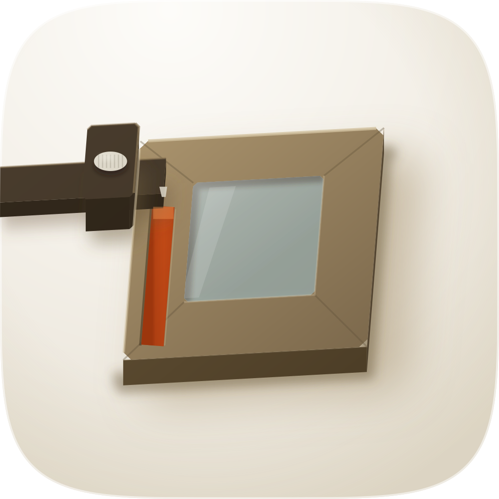 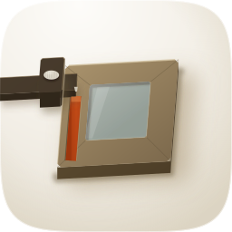 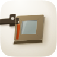 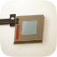 |
11 / 12 | Passes 1–4 on the renders. 16px RMS luminance contrast 0.213 against a 29-icon family median of 0.173 (the commission brief's stated median is 0.152); the predecessor measured 0.052 and was joint worst of the set. Silhouette filled black is nameable — a slab with a T-shaped tool clamped to its edge. One hue family: 96% of chromatic pixels fall in a single 30° bin. Per-face separation authored to the corpus ratio (top face 0.50 / flank 0.36 / tool 0.23), wide shallow contact pool plus a narrow seat at the measured depths. Fails #7 on the timber's top face at 1.76:1 against clean porcelain — the darkest defining masses clear it (tool 3.36:1, flank 2.35:1, the cut 2.45:1) and apple-18's own object median sits at 1.92:1, so this is the register's ceiling rather than a construction fault, but it is a fail and it is recorded as one. |
| rasterC1 · icon-engineC-7d777b.pngEngine C — GPT Image 2, corpus-referenced, squircle-masked. Material target |
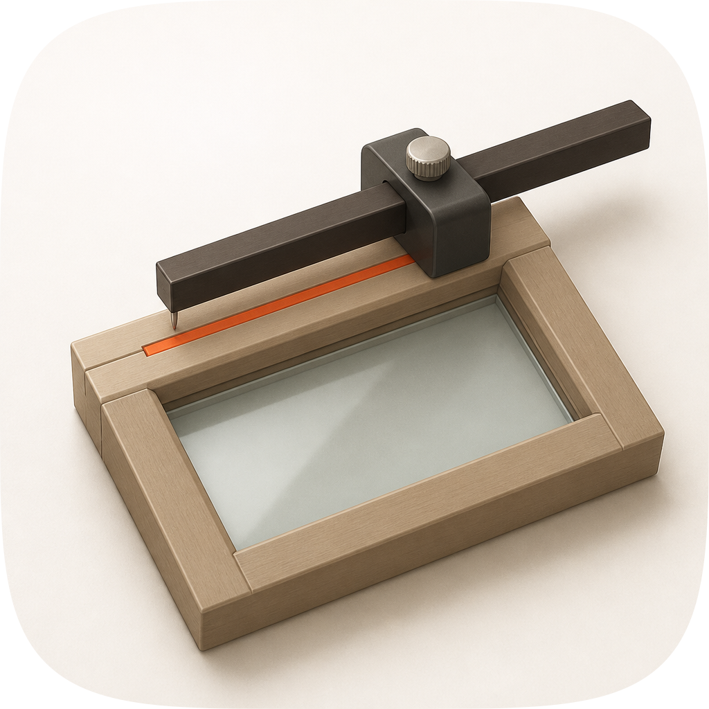 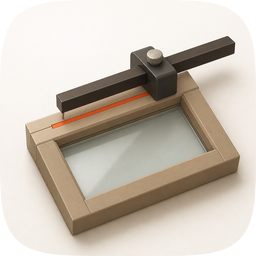 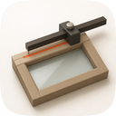 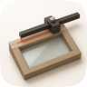 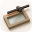 |
7 / 12 | The best material in the set and it still loses. Won the read on volume and on the gauge's anatomy — the long beam crossing the work with the stock clamped on the edge is its idea, and it is the composition the master now uses. Hard-fails #7: timber L p50 0.628 against a 45px dilated porcelain ring at 0.882 is 1.40:1, measured with the ring method rather than by hand-placed samples. Hard-fails #4: the scribed line is 13px wide on a 1024 canvas, so the icon's one semantic element is gone by 32px. Also fails #2 — the object runs to 80% of the tile width with the beam nearly out of the mask on two sides. Salvaged into the master: the gauge anatomy, the long tail, the mitred solid, the accent's measured hue (H 17–20°, S 0.84–0.91). Not converged on: its value structure, deliberately. |
| rasterC2 · icon-engineC-521645.pngEngine C — GPT Image 2, second take, squircle-masked |
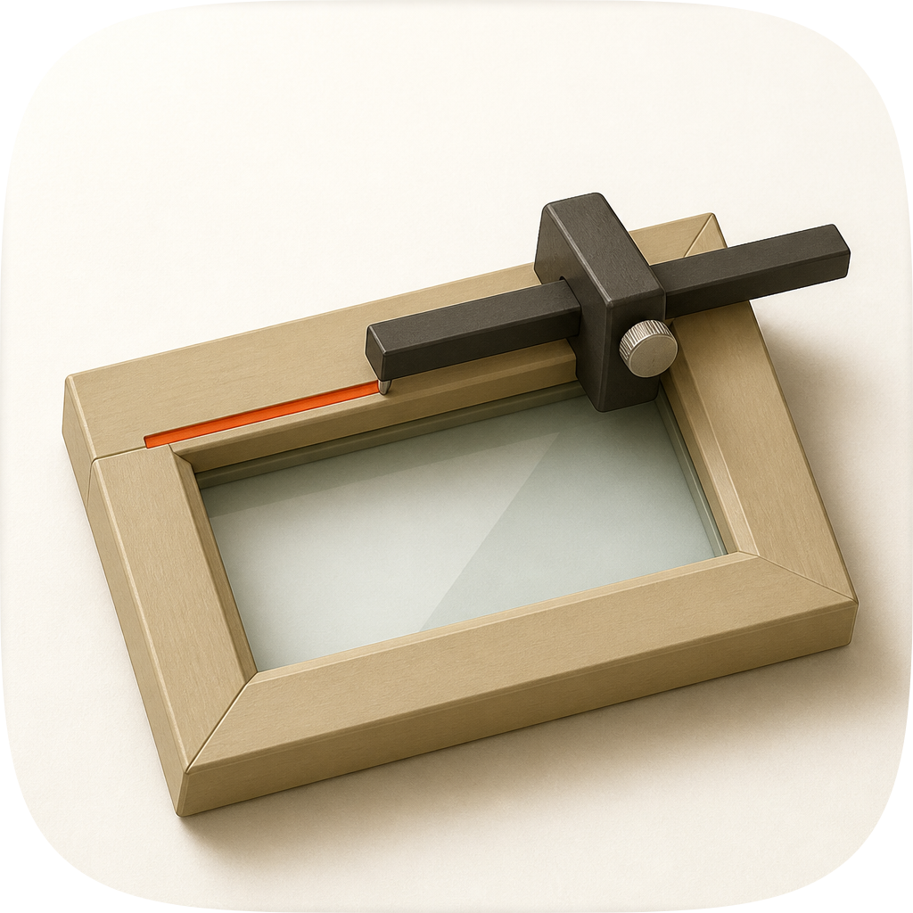 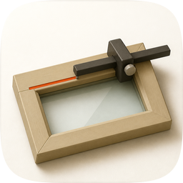 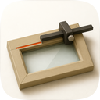 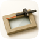 |
6 / 12 | Better margins than C1 and a stronger extruded flank, worse everything else. Figure-ground is the worst of the four at 1.27:1 timber-to-ring; the pane is near-white so the frame's interior and the bench are one value; the accent is 12.6px and dies before 32px. The assembly also sits high-right with a dead quarter bottom-left, which is #2. Contributed the reading that both raster takes independently chose a steep projection whose silhouette stops saying "window" — which is why the master uses a cavalier oblique with only a 6° tilt instead. |
| arrowB · icon-engineB-arrow-fd0889.svgEngine B — Arrow 1.1, real vector, from the spec as brief |
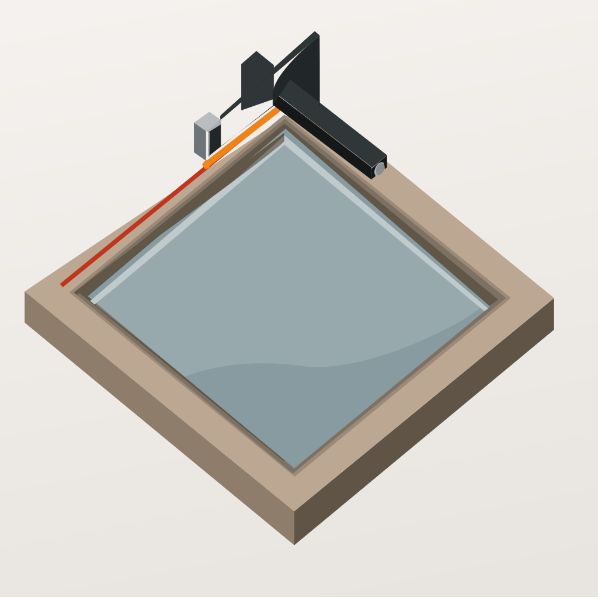 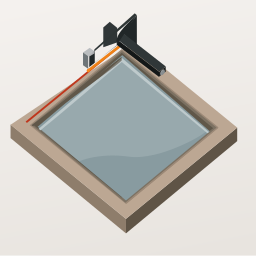 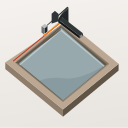 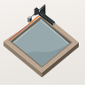 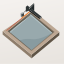 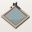 |
5 / 12 | Clean isometric geometry, no material and no scene. Fails #1 — flat ground with no cushion, no rim, no vignette, and the diamond runs into the mask's corners. Fails #4 and #3: the tool resolves into an arrowhead by 48px and is a smudge at 16. Fails #8 — no contact shadow at all, so the solid floats. Fails #6: the pane is a large cool grey-blue mass, a second hue family carrying 40% of the object. And the accent escapes the member and runs off the tile edge, which inverts the whole idea — a gauge line that leaves the work is not registered to anything. Kept for one contribution: the bright stepped lip around the glazing rebate, which the master now draws on the near inner edges. |
fidelity.py structure at 37 paths / 18KB, well inside the envelope, with no <image> embed and no <text>. Known liabilities to revisit: (1) rubric #7 fails on the timber's top face at 1.76:1 against clean porcelain — carried deliberately, because converging on 3:1 there means either a near-black frame or abandoning the porcelain register, and the ground-truth captures sit at 1.92:1 themselves; the darkest defining masses do clear it. (2) The cut is 1.27% of the tile — better than the predecessor's 0.7% and now unmistakably the focal, but on a shelf strip beside proctor, mac-doctor, clarify and report it is still the least conspicuous accent in the row. (3) The beam is cut by the mask on the left edge on purpose (device #18); it is the one element that could be read as an overflow rather than a boundary, and it is the first thing to change if a reviewer's eye catches on it. (4) No fidelity loop was run: neither raster is a legitimate convergence target, because the two properties the master had to fix — pale timber and a hairline accent — are exactly the properties a similarity score would have rewarded. The rubric outranks the gate, so the material was rebuilt from measurements off apple-2026/ instead, and the master's material is therefore authored rather than measured against a reference. (5) The mitre joints read as four faint diagonals that can group into an X at 128px; they are at 0.34 opacity and were louder before, but they have not been eliminated. (6) LPIPS was unavailable in this environment (no torch), so nothing here is a machine judgment about material — every material claim on this sheet is a sampled measurement or an eye.| Check | Master | Reference / bar |
|---|---|---|
| 16px RMS luminance contrast, std(L) | 0.213 | family median 0.173 · brief's stated median 0.152 · predecessor 0.052 |
| 32px / 48px std(L) | 0.218 / 0.220 | holds across the collapse zone |
| 16px p90−p10 spread | 0.536 | — |
| the tool vs clean porcelain | 3.36:1 | rubric #7 bar 3:1 |
| timber flank vs clean porcelain | 2.35:1 | — |
| the cut vs clean porcelain | 2.45:1 | — |
| timber top face vs clean porcelain | 1.76:1 | apple-18's own object median 1.92:1 — #7 fail, recorded |
| accent area | 1.27% | predecessor 0.7% · rasters 0.3–0.5% |
| accent pixels surviving at 16px | 36 / 256 | rasters 0 / 256 |
| hue families (chromatic pixels, S>0.14) | one — 96% in a single 30° bin | rubric #6 bar ≤2 |
| ground vignette, top to bottom edge | L 0.986 → 0.884 | apple-18 measured 0.993 → 0.923 |
| contact shadow depth | wide pool −0.05 L, narrow seat −0.11 L | apple-18 measured −0.058 / −0.114 |
| per-face separation, top : flank | 0.50 : 0.36 (1.93:1) + tool 0.23 (2.35:1) | apple-30 measured 0.968 : 0.413 = 2.34:1 |
fidelity.py structure | PASS — 37 paths, 14 gradients, 4 filters, 4 named groups, 18,058 bytes | ≤400 paths, ≤200KB, ≥2 named layers |
| LPIPS / perceptual material metric | could not run — no torch in this environment | not a pass; the material was never machine-measured |
python3 ../../create-mac-icon/skills/create-mac-icon/scripts/audit_sheet.py render assets (1024 / 256 / 128 / 96 / 64 / 32 sources); verified by its check subcommand. Figure-ground read with the dilated-ring method (object's colour mask against a 45px MaxFilter dilation of it, median to median) rather than hand-placed samples, per material-recipes § harbour (f) — a hand sample on the same icon returned 3.10:1 where the ring returned 1.85:1.